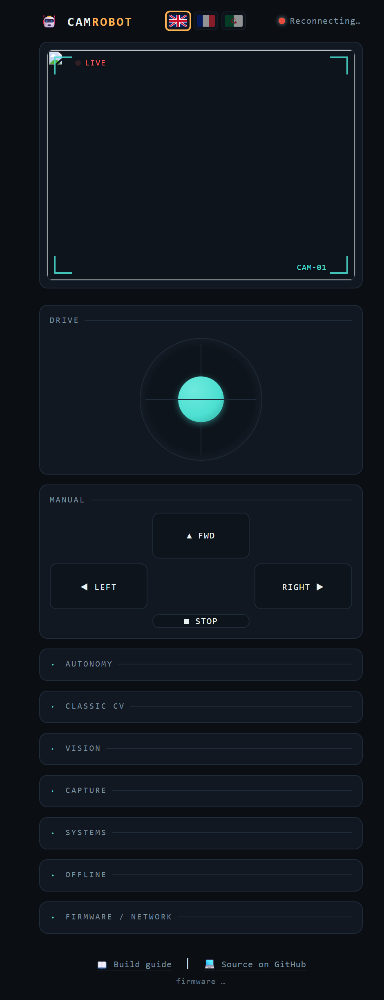
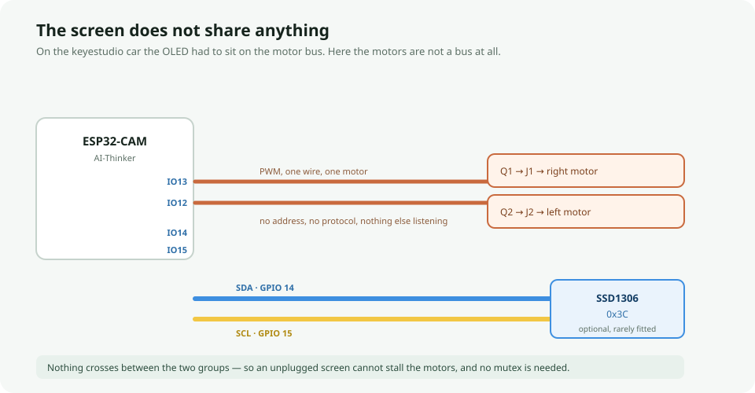
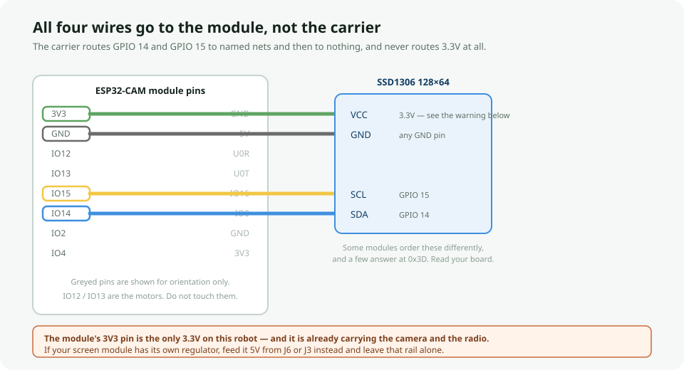

Firmware and web control page for the WDIY
ESP32-CAM plugin robot — an AI-Thinker ESP32-CAM module plugged into the
esp32_cam_plugin_robot carrier board (WORKSHOP-DIY ID_04). Ported from
VideoCar, which does the same job on the keyestudio KS5017 chassis: the whole web app
comes across, and everything that touches a pin had to change.
github.com/abourdim/wdiy_esp32_cam_robot
git clone https://github.com/abourdim/wdiy_esp32_cam_robot.git
cd wdiy_esp32_cam_robot
Arduino IDE (known-good baseline): open
Codes/4_CamRobot/4_CamRobot.ino, select the AI-Thinker ESP32-CAM board,
set Tools > Partition Scheme to Minimal SPIFFS (1.9MB APP with
OTA), enable Tools > PSRAM: Enabled, and install
Adafruit NeoPixel, Adafruit SSD1306 and
Adafruit GFX from Tools > Manage Libraries.
⚠ Flashing this board is a two-handed job. J3 is a bare 4-pin FTDI header — 5V, RX, TX, GND — with no auto-reset circuit, and GPIO0 is not broken out to a button either. Jumper GPIO0 to GND on the module, tap reset, start the upload, then remove the jumper and reset again. Do this once, then use OTA from then on.
PlatformIO:
./launch.shWalks you through checking/installing PlatformIO, building, flashing, and opening a serial monitor. See Build systems below for what each menu option does.
Once flashed, connect to the wdiy1 WiFi network (password
88888888) and open http://192.168.4.1 in a browser.
📚 New to this, or want to drive the car from your own scripts?
ports.html is a step-by-step guide to both servers — what
port 80 and port 81 each do, why there are two of them, every endpoint with its value
ranges, and the 500ms failsafe that catches everyone out the first time they try to
drive the car with curl.
⚠ The Vision features need internet — the default AP mode has none.
Out of the box (ap = 1) the car hosts its own isolated
wdiy1 network, which isn't connected to anything. Pose, Hand
tracking, Facial expression, Plates, AI Vision, and the jsQR fallback all download
their models from a CDN the first time you enable them, so on the car's own AP they
will fail to start. Driving, the video stream, snapshots, and recording all
work fine there — it's only the model-backed overlays that don't.
To use them, set ap = 0 near the top of
4_CamRobot.ino along with your router's ssid/password,
reflash, and read the car's IP off the serial monitor. Your phone or laptop then has
the car and the internet at the same time.
The one exception is QR / Barcode on Chrome, Edge, or Android
Chrome, which uses the browser's built-in BarcodeDetector and needs no
network at all — that one works on the car's own AP.
⚠ This robot has no reverse.
Each motor is switched by a single low-side MOSFET (Q1/Q2, 2N7002) with its gate on a GPIO. That is one degree of freedom per motor — how hard it is driven — and no H-bridge, so there is no way to run a wheel backwards.
Everything downstream inherits it. Forward and Stop work as they always did. Left and Right are a forward pivot around the undriven wheel rather than a spin on the spot, so the robot swings through a much wider arc and needs the room in front of it. The Back button is gone from the D-pad, replaced by Stop. The joystick's reverse half is clamped to zero. Follow-me and Colour chase can no longer back away from a target that comes too close — they stop and wait. None of that is a bug to be fixed in software; it is one missing H-bridge.
Everything below was read out of
esp32_cam_plugin_robot.kicad_sch and .kicad_pcb, not assumed
from the module.
| GPIO | Goes to | Notes |
|---|---|---|
13 | J1 screw terminal, gate of Q1 | Motor M1 = right wheel. PWM, forward only. R1 10k pulldown, D1 1N4007 flyback. |
12 | J2 screw terminal, gate of Q2 | Motor M2 = left wheel. Same again. Also MTDI, the flash-voltage strapping pin — R2's pulldown is the only reason this pin is usable as an output at all. |
4 | D3, TX1812DB RGB pixel | The Lights slider. One pixel, DOUT unconnected. Also the gate of the module's onboard flash LED. |
16 | U2 / J6 motion sensor, via Q3 | Inverted (motion reads LOW) and
no board pull-up (needs INPUT_PULLUP). Also the PSRAM
chip-select — see below. |
1 / 3 | J3 FTDI header | U0TXD / U0RXD. No auto-reset. |
14, 15, 2 | nothing | Routed from the module to named nets and no further. 14 and 15 are where an optional OLED goes. |
0 | nothing | Not broken out, so flash mode is a hand-placed jumper. |
Power. J7 is a USB-C
receptacle wired for power only — CC1/CC2 are unpopulated, so it takes 5V from an
A-to-C cable or a dumb supply, not from a charger expecting to negotiate.
+5V runs the module, the pixel and the sensor. VCC is the
separate motor rail: J5 is the battery input, and J4 is a 2-pin header that bridges
VCC to +5V if you want to run everything off one supply. A
robot on USB alone boots, streams video, and cannot move.
The microSD card is not usable. GPIO 2, 4, 12, 13, 14 and 15 are the module's SD-card pins, and this board spends 12, 13 and 4 on the motors and the pixel. There is nothing to fix here; the slot has no pins left.
GPIO16 is the PSRAM chip-select on an AI-Thinker module, and the carrier routes GPIO16 to the motion sensor. They cannot both have it, so it is decided at build time.
| Camera | Motion sensor | |
|---|---|---|
env:esp32cam |
PSRAM, two QVGA buffers | not compiled in; /status reports "pir":-1 |
env:esp32cam-pir |
one DRAM buffer, QVGA is a hard ceiling | works; /status reports 0 or 1 |
Video is what this robot is for, so PSRAM wins the default. Both environments build, so neither path rots:
cd firmware/4_camrobot && pio run -e esp32cam-pir-DBOARD_HAS_PSRAM from build_flags is not enough.
PlatformIO's esp32cam board definition defines it too, in its own
extra_flags, and build_flags cannot remove what
extra_flags added — it has to be undefined with
-UBOARD_HAS_PSRAM. src/pir.h has an #error that
fires if you get this half-right, because a build that quietly kept PSRAM while reading
GPIO16 would report motion every time the cache missed./joystick?x=&y=), arcade-mixed to per-wheel PWM, alongside the
original D-pad/keyboard controls.localStorage (instant restore on reload). On page
load the device's own values always win if they differ from the local cache.set_vflip/set_hmirror
live, so you can fix the camera's orientation for your chassis without
reflashing.tfjs runtime (avoids a separate MediaPipe script/wasm bundle from
yet another host), 21 keypoints per hand plus left/right handedness (orange).@vladmandic/face-api (an actively-maintained fork of the long-dormant
face-api.js), whose model weights are published in the same npm package as the
script — unlike most of Vision, this only depends on a single host
(jsdelivr) rather than two.BarcodeDetector when available (Chrome/Edge/Android Chrome) —
no network needed at all, works even on the car's own isolated AP. Falls back to
the jsQR library (QR codes only, needs internet once) on browsers without native
support (Safari/iOS)./status
and the serial console at boot all report the firmware version, the compiler's
build timestamp, and the git revision it came from (with a -dirty
suffix, shown in amber, when the tree had uncommitted changes). Previously there
was no way to tell what was actually running on a car short of reflashing it. The
revision is stamped by a PlatformIO pre-build hook; Arduino IDE has no equivalent,
so builds from there report nogit rather than a possibly-stale hash.
The page is also served Cache-Control: no-store, so a browser can't
pair a cached page with newer firmware.LINE_SPEED is the knob to raise once it tracks reliably. Leave
the Speed slider high — the autonomous modes cap themselves well below
it, and the two multiply./joystick endpoint manual driving uses
— so the firmware needed no new handler and the 500ms failsafe covers this
mode too. Frames come off the live MJPEG stream rather than a second
/capture poll, which is what makes a real control loop possible.
Disarmed by default; touching an arrow key, the D-pad or the joystick takes over
instantly. Output is capped well below full speed, and losing the target stops the
robot and then disarms rather than sending it hunting. Needs internet once to load
the model. On this chassis it cannot back away from a target that comes too close
— there is no reverse, so it stops and waits for the gap to open.
Give the robot clear floor space before arming it.0x3C on GPIO 14/15, which on this board is a bus of its own rather than
one shared with the motors. It boots into a self-test — did the camera come up,
is the motion sensor seeing anything, which network the robot ended on, and
the address to type, which in station mode is handed out by DHCP and
until now existed nowhere but the serial console. Once a browser connects it becomes an
animated face: it blinks, winks, looks the way it is driving, worries when the failsafe
cuts the motors, and falls asleep after twenty seconds. Neither pin is broken out on
the carrier, so almost nobody fits one — the module is probed at boot and
everything no-ops if it is not there. See OLED screen below..webm/.mp4 client-side
(Canvas + MediaRecorder pulling frames from /capture) since the ESP32
itself can't encode video or write to an SD card in this sketch. Both carry the
Workshop-DIY mark, stamped into the pixels bottom-right rather than overlaid on the
page, so the file still says where it came from once it has left the car. The logo is
embedded as a data: URI — the car's own AP can't reach anywhere to
fetch it from, and a watermark that only appears when the workshop has internet is not
a watermark./status as
"pir". Off by default because it wants GPIO16, which is also the PSRAM
chip-select — see The board.Full change-by-change writeup: report.html.
firmware/ PlatformIO projects, one per sketch
1_blink/ Blink the RGB pixel
2_breathing_light/ Fade it up and down
3_motor/ Motor test sequence (drives on boot -- give it room!)
4_camrobot/ The main project
src/
4_CamRobot.ino setup()/loop(), camera + WiFi bring-up, failsafe
SetMotor.h The two MOSFETs, and why there is no reverse
lights.h The RGB pixel that replaced the car's white LED
pir.h The motion sensor, and the GPIO16 argument
oled.h Optional 0x3C screen: self-test, status, face
app_server.h HTTP handlers + the whole control page
platformio.ini Board, libraries, and the PSRAM/PIR choice
git_rev.py Stamps the git revision into the binary
ota_flash.sh Push firmware over WiFi
Codes/ Arduino-IDE-style sketch layout (all 4 sketches)
4_CamRobot/ Flash this one from the Arduino IDE
launch.sh Interactive PlatformIO menu -- pick an app to build/flash/monitor
README.html This file
ports.html Beginner's step-by-step guide to the port 80 / port 81 servers
report.html Port report -- what the hardware forced, and what was verifiedCodes/4_CamRobot and
firmware/4_camrobot/src are kept in sync — same source, two build
systems. Edit under firmware/, then copy across. The other three sketches are
simple demos included for a complete workshop package, but unlike on the car they are not
unmodified: both things they demonstrate moved pins, so 1_blink and
2_breathing_light drive the RGB pixel and 3_motor drives two
MOSFETs instead of an I²C controller.

A 128×64 SSD1306 module at 0x3C goes on
GPIO 14 (SDA) and GPIO 15 (SCL), which on this board belong to nothing
else. That is the whole difference from the car this was ported from, where the screen had
to share the motor controller's bus and pay for it with a mutex, dropped frames, and a
rule against drawing while driving.
Here the motors are two MOSFET gates driven by
ledcWrite() and never touch I²C at all, so the screen owns the bus. No
lock, no contention, and — unlike the shared-bus robots in this family — an
unplugged screen cannot stall the wires the drive commands go out on. The worst a missing
screen does is leave the glass dark.

OLED pin Goes to Where
VCC 3.3V ESP32-CAM 3V3 pin -- but read the warning below
GND GND any GND pin on the module, or J3 / J5
SDA GPIO 14 ESP32-CAM pin marked IO14
SCL GPIO 15 ESP32-CAM pin marked IO15Some modules print the four pins in a different order, and a few
answer at 0x3D instead. Read the labels on your board, not
the picture.
GPIO 14 and GPIO 15 are also two of the six pins the module wires to its microSD slot. That card is unusable here regardless — GPIO 12, 13 and 4 are already spoken for by the motors and the pixel — so spending these two on a screen costs nothing that was not already gone.
Nothing else is required. The screen is probed at
boot; if nothing answers at 0x3C the robot prints one line to serial and runs
exactly as it would have anyway. /status reports "oled": 0 or
1.
CamRobot and the version. Two frames rather than one: at
120×64 the logo only just stays legible, and cropping it to share the glass with
a version string looked like neither.0x30. There is no controller left
to ask: a MOSFET gate either gets a PWM signal or it does not, and nothing on this side
of it can tell whether a motor is even plugged into the screw terminal. Rather than
print a reassuring ok that tests nothing, that line went to the
sensor.z. The panel is never switched
off. A dark screen is indistinguishable from a flat battery, so every stage
still shows something — and everything it shows drifts, because burn-in comes
from pixels that never change, not from pixels that are lit.A camera failure gets its own screen naming the error code and what to check, instead of only the triple-flashing pixel.
Worth knowing if you are porting this the other way, or comparing it
against the micro:bit robots that wear the same face. On the keyestudio car, motor writes
came from the HTTP server's task and the screen was drawn from loop(), both
over one bus. Two FreeRTOS tasks using Wire with no interlock interleave their
transactions — the screen receives motor bytes and the driver board receives pixel
data, only under load — so that code carried a mutex around every transaction, with
motors waiting indefinitely and the screen not waiting at all.
All of that is gone here, because the premise is gone. What was kept is the rule that the face does not redraw while the wheels are turning — not because a 90ms transfer might now land between a joystick command and the motors (it cannot), but because nobody watches the eyes of a robot that is driving away from them.
The bus still runs at 100kHz rather than the 400kHz
Adafruit_SSD1306 would normally switch to. With the bus private that would now
be safe, but on a hand-soldered screen it is the wrong place to spend the margin: these are
flying leads to module header pins with only the panel module's own pull-ups.
OLED_I2C_HZ in oled.h is the knob if your wiring is short.
Each sketch is its own PlatformIO project under firmware/<name>/,
all targeting env:esp32cam (AI-Thinker pinout) since it's the same
physical board for all four:
| App | Notes |
|---|---|
1_blink | Blinks the RGB pixel. Needs the NeoPixel library even though it is otherwise trivial — this board has no plain LED to toggle. |
2_breathing_light | Fades the same pixel. An addressable LED has no analog input to write, so the fade scales the colour instead. |
3_motor | Runs its drive sequence immediately on boot/reset — give the robot room to move before flashing or resetting it. It only ever drives forward, so that means room in front of it. |
4_camrobot | The main project — see the table below for why its platformio.ini has extra settings the other three don't need. |
firmware/4_camrobot/platformio.ini:
| Setting | Value | Why |
|---|---|---|
default_envs |
esp32cam |
Three environments are defined — the normal build,
esp32cam-ota for network pushes, and esp32cam-pir for the
motion-sensor variant. Without this, a bare pio run -t upload would walk all
three and try to flash the robot over USB, then over the network with no address, then
again with the sensor build. The other two are reached with -e. |
platform |
espressif32@6.5.0 |
Pinned, not left on "latest" — an unpinned platform can silently pull a
different esp32-camera driver version than what Arduino IDE has
installed, which changes camera sensor-probe behavior. 6.5.0
(arduino-esp32 2.0.14) is the version this project is confirmed working against.
The other three apps are pinned to the same version too, for consistency, even
though they're too simple to be sensitive to it. |
board_build.partitions |
min_spiffs.csv |
Needs two OTA app slots for firmware updates (see OTA & WiFi setup below),
which huge_app.csv doesn't have at all. min_spiffs.csv gives two
~1.9MB slots instead of one 3MB slot — the firmware is currently about 1.2MB (62%),
comfortably under that, but it's a harder ceiling on future growth than before. |
build_flags |
-DBOARD_HAS_PSRAM,-mfix-esp32-psram-cache-issue |
Arduino IDE's Tools > PSRAM: Enabled menu sets these behind
the scenes. Under PlatformIO the esp32cam board definition already carries
both in its own extra_flags — they are repeated here
only so they are visible where somebody will look for them. That is also why
turning PSRAM off needs -UBOARD_HAS_PSRAM rather than deleting a line
— see The board. Getting these wrong is the classic cause of
"works in Arduino IDE, camera fails in PlatformIO"
(Camera init failed with error 0x106). |
upload_speed |
460800 |
Safer default than 921600 for a board flashed through a bare FTDI adapter with no auto-reset circuit — which this one always is, since J3 carries only 5V, RX, TX and GND. |
lib_deps |
tzapu/WiFiManager,adafruit/Adafruit NeoPixel,adafruit/Adafruit SSD1306,adafruit/Adafruit GFX Library |
WiFiManager backs the web-triggered WiFi setup captive portal
(see OTA & WiFi setup below). Adafruit NeoPixel drives the
RGB pixel and is not optional — it is the only light on the robot, and both the ready
flash and the camera-fault pattern use it. Adafruit SSD1306 and
Adafruit GFX back the optional screen; the sketch runs with no screen attached
but does not build without the libraries. Arduino IDE users install all four via Library
Manager. |
launch.sh menu:
0) Select app 6) Serial monitor
1) Check installation 7) List serial ports
2) Install PlatformIO 8) Clean build
3) Build firmware 9) Flash over WiFi (OTA)
4) Flash firmware e) Build a specific environment
5) Build + Flash + MonitorIt prompts for which app to work with on startup (auto-discovers any
firmware/<name>/platformio.ini), and option 0 switches apps at any
time without restarting the script. Option 4 (Flash) prints this board's flashing
procedure rather than the car's: there is no BOOT button to hold, so it is jumper GPIO0 to
GND, tap RESET, upload, then remove the jumper and reset again — plus an extra
warning for 3_motor about giving the robot room to move. Options 9 and
e are new here: OTA is the way you will actually update a board with no
auto-reset, and e reaches the environments default_envs
deliberately hides.
platformio.ini (e.g. re-pinning the
platform version or switching the PSRAM flags), run option 8 (Clean) before rebuilding so a
stale .pio/ cache doesn't mask the change.Standard Arduino IDE flow. Make sure Tools > PSRAM is set to
Enabled, Tools > Partition Scheme is set to
"Minimal SPIFFS (1.9MB APP with OTA)" (needed for OTA updates — see
OTA & WiFi setup below), and that WiFiManager (tzapu),
Adafruit NeoPixel, Adafruit SSD1306 and Adafruit
GFX are installed via Tools > Manage Libraries. Builds from here always
report nogit in the build stamp — the Arduino IDE has no pre-build hook to
stamp a revision with.
Two independent ways to update firmware over WiFi, plus an opt-in way to join a
home network instead of the car's own AP — none of this changes the default
out-of-the-box experience (wdiy1 AP, USB flashing) unless you use it.
The control page's collapsible Firmware / Network panel has a file
picker: choose a firmware.bin built for this board and press
Upload & flash. The car reboots automatically once the upload finishes.
Works whether the car is on its own AP or a joined router.
For anyone with PlatformIO installed:
firmware/4_camrobot/ota_flash.sh <robot-ip> [path/to/firmware.bin]No image path given rebuilds from source and pushes it; a path given (e.g. a
previously built .pio/build/esp32cam/firmware.bin) uploads that exact binary with no
rebuild. Default IP on the car's own AP is 192.168.4.1; on a router, read the IP
off the serial monitor.
The same Firmware / Network panel has a WiFi setup… button. It reboots
the car into a WiFiManager captive portal on a separate CamRobot-Setup network
— join it within 3 minutes, pick your home WiFi from the list it shows, and enter its
password. On success the car saves it and reboots into that network; on failure or timeout
it reboots back into whatever mode it was using before, so the car never gets stuck
unreachable.
CamRobot-Setup, then your home network). Same caveat as the rest of this
control surface: the /update and /wifi-setup endpoints have no
authentication — see report.html.Board-specific problems come first. Everything after them is inherited from VideoCar and behaves the same way here.
Check that VCC actually has a battery on it.
+5V from USB-C runs the ESP32, but the motor rail is separate — a robot
on USB alone boots, streams video, and cannot move. J4 bridges the two if that is what you
want. If the rail is live and the wheels still do nothing, the failsafe may simply be doing
its job: a single curl produces half a second of movement and no more.
M1 (J1) is the right wheel and M2 (J2) is the left. Nothing on the
silkscreen says so. Swap the two plugs rather than editing the firmware — the mixing
convention runs through app_server.h in several places and correcting it in
software means correcting it in all of them.
Two bare MOSFETs driving two unmatched motors off one rail is about as open-loop as a robot gets. That is what the Trim slider is for, and it is saved to NVS so you only dial it in once.
GPIO12 is MTDI, which the ESP32 samples at reset to choose its flash
voltage, and it must be low at that moment. R2's pulldown handles it — but anything
else attached to J2 that pulls the gate up will stop the module booting. This is also why
nothing should drive GPIO12 before motor_init() runs.
Change NEO_GRB to NEO_RGB in
src/lights.h. Nothing else in the firmware cares, because everything else only
ever asks for white or for the fault red.
Expected in short bursts: GPIO4 is both the pixel's data line and the
gate of that LED, so every pixel update puts about 30 µs of traffic on it. A
steady glow rather than a blink means something is refreshing the pixel continuously
— lightsSet() exists to prevent exactly that, so check nothing bypasses
its change guard.
You have built with PSRAM and USE_PIR both enabled, and
GPIO16 is reporting cache traffic rather than a person. The #error in
pir.h is meant to make that impossible; if you got past it, see
The board. Also check /status: "pir":-1
means the sensor is not compiled in at all, which is the default.
This is ESP_ERR_NOT_SUPPORTED from the camera sensor probe. If the
same board works in Arduino IDE, it's a toolchain/build-flag mismatch, not hardware
— see the PSRAM/platform-pinning notes above. This project's
platformio.ini is already configured to avoid it; if you still hit it,
run ./launch.sh option 8 (Clean) to clear any stale build cache, and
confirm your Arduino IDE's installed esp32 core version
(Tools > Board > Boards Manager) roughly matches the pinned
PlatformIO platform version — if it's wildly different, re-pin
platform = espressif32@X.Y.Z to match.
Usually a marginal power supply — camera + WiFi init draws a current spike many FTDI adapters can't supply cleanly. Use a proper 5V/2A source. The sketch already enables the brownout-detector workaround, which will surface this as a clean retry/error message instead of a silent reboot loop, but it doesn't fix underlying undervoltage.
First: most robots do not have one, and that is normal — the
two pins are not broken out on the carrier. If you did fit one, check /status.
"oled": 0 means nothing answered at 0x3C when the robot booted, so
it is a wiring or address problem, not a firmware one. Most of these modules are
0x3C; a few are 0x3D (some have a solder jumper to pick). Swapped
SDA/SCL is the other usual cause: SDA is GPIO 14, SCL is GPIO 15 —
note that this differs from the keyestudio car, where SCL was GPIO 13, which is a motor
here. "oled": 1 with a genuinely blank panel is a wiring or power fault: check
the 3.3V feed first, and read the power warning in the OLED section before you take it from
the module's own rail.
On the keyestudio car this symptom meant the OLED library had
re-initialised the bus onto its own default pins and taken the motors with it. That cannot
happen here — the motors are not on a bus. What periphBegin = false in
oledInit() still protects is the screen itself: left true,
begin() calls Wire.begin() a second time on the default pins and
moves the bus off the two wires you soldered to.
Shouldn't happen — the firmware failsafe stops the motors after 500ms without a command. If you're seeing otherwise, check the build stamp in the control page footer. Note that zero PWM on this chassis is a coast rather than a brake: the MOSFET stops conducting and the motor freewheels, so the robot always rolls a little past the point where the command stopped.
Expected the first time. The models come from a CDN and the car's AP has no internet. Join a router, turn the feature on once so its files land in the offline cache (the Offline panel shows the count and size), then go back to the car's AP — it'll work from then on. Plates is the exception: Tesseract.js loads from inside a Web Worker the cache can't intercept, so it stays internet-only.
The stream is fetched with crossorigin="anonymous" so the page can
read frames from it, which requires the CORS header the firmware sets on port 81. If
those ever disagree the browser refuses the image outright. The page detects this and
reconnects without CORS after two failures, falling back to /capture
polling, so it should self-heal within a couple of seconds — if it doesn't,
compare the commit in the footer's build stamp against git log --oneline
and reflash if they disagree.
Put the Speed slider at maximum. It multiplies with the mode's own cap, and
LINE_SPEED is deliberately low (26), so a reduced slider can leave the
motors below their stiction floor. If it still won't move, raise
LINE_SPEED in app_server.h.
Lower LINE_KP, don't raise it. The loop is limited by round-trip
latency rather than by gain, and more gain makes a delay-dominated loop worse. If it
misses corners instead, raise LINE_TURN_CUT so it slows more while
steering. If it reports “looking for a line” over a real line, the
contrast is too low — use wider, darker tape before touching
LINE_MIN_CONTRAST.
All of these numbers were tuned on a chassis that could spin on the spot. A forward pivot has a much larger turning radius, so expect to retune rather than to trust them — and lay out a course with correspondingly gentler corners.
Any manual input disarms it by design, as does hiding the browser tab, and losing the target stops the car after 0.7s and disarms after 3s. All three are intentional.
Known, unaddressed limitation carried over from the original sketch — see
report.html for details. Anyone on the wdiy1
WiFi network (default password 88888888) can drive the robot and watch the
camera.
git log --onelineThis repository's history starts at the port; it is not a continuation of VideoCar's, so there is no single diff that shows what changed. That is what report.html is for.